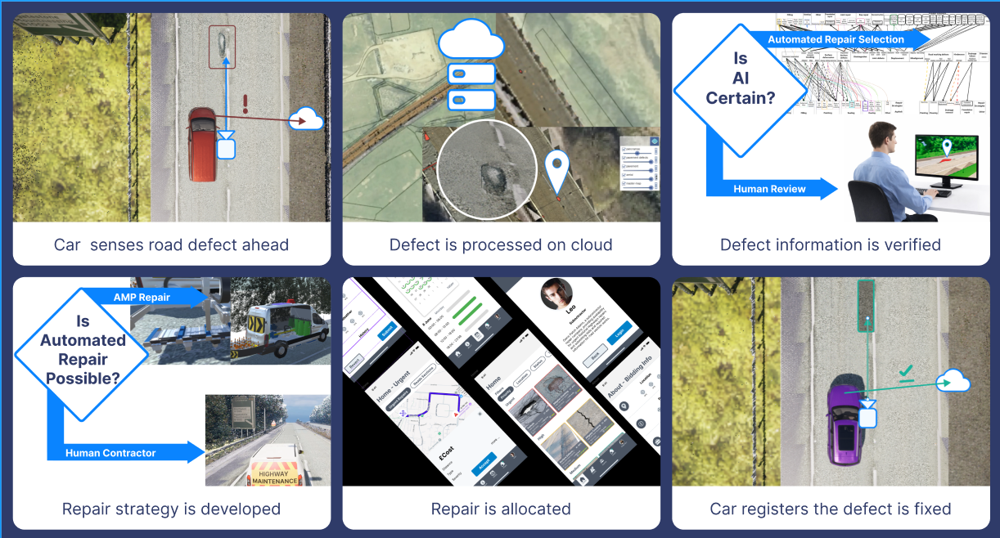
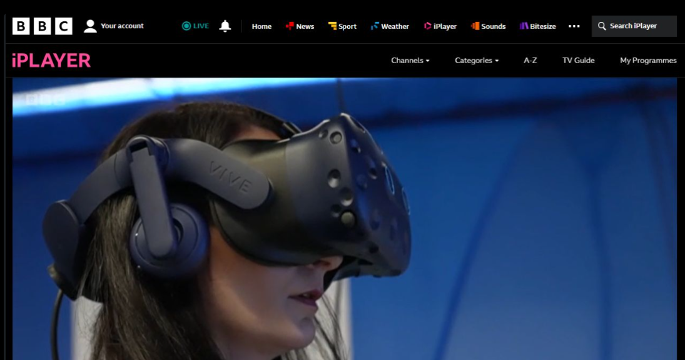

Hi, I’m Lilia.
I transform complex spatial data into intuitive digital experiences.
I’m Dr Lilia Potseluyko, a Cambridge-based researcher and digital engineer working at the intersection of spatial data, digital twins, computer graphics, AI and user experience. I turn complex technical information into practical, interactive tools that help people understand real-world systems, explore evidence and make better decisions.